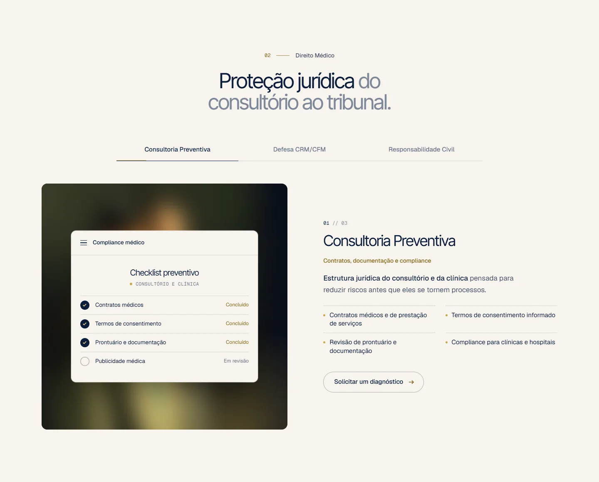
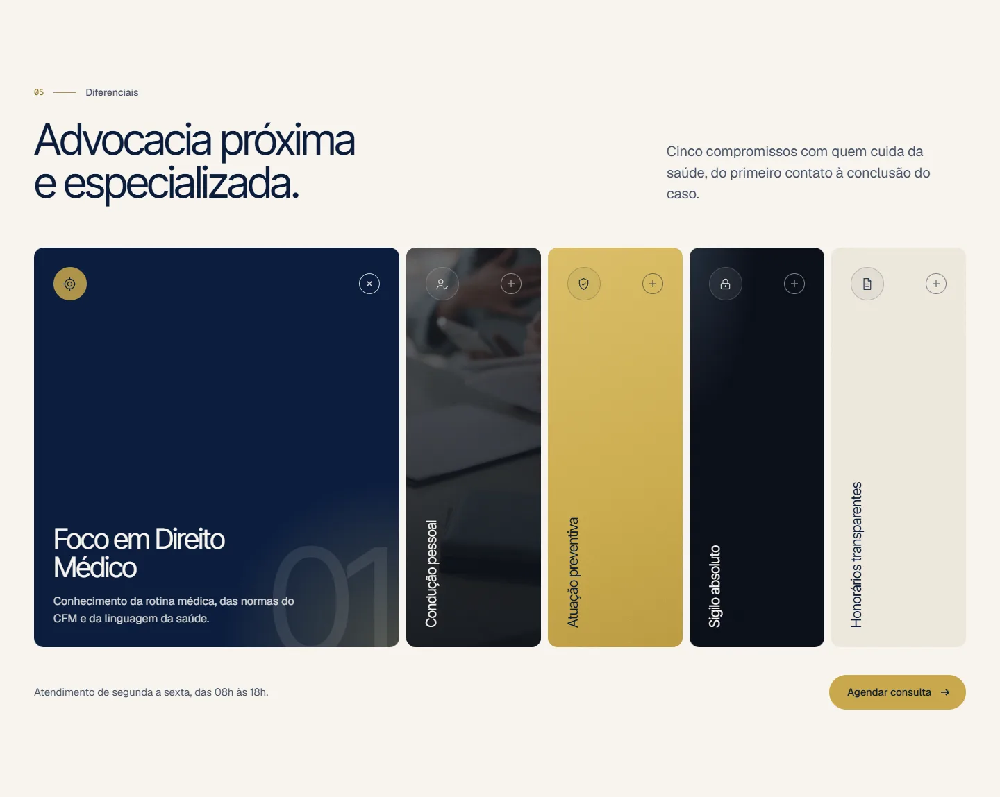
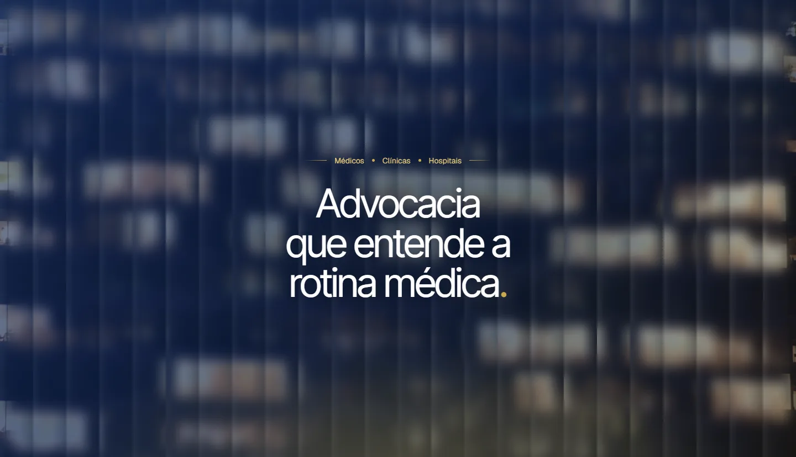
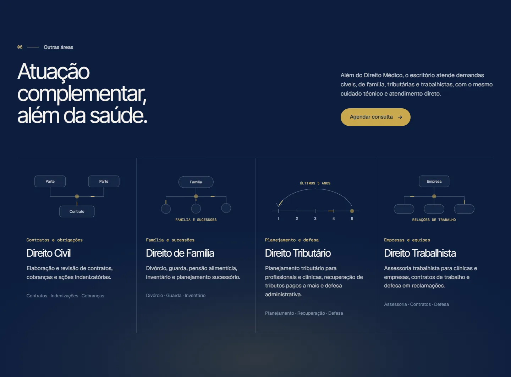
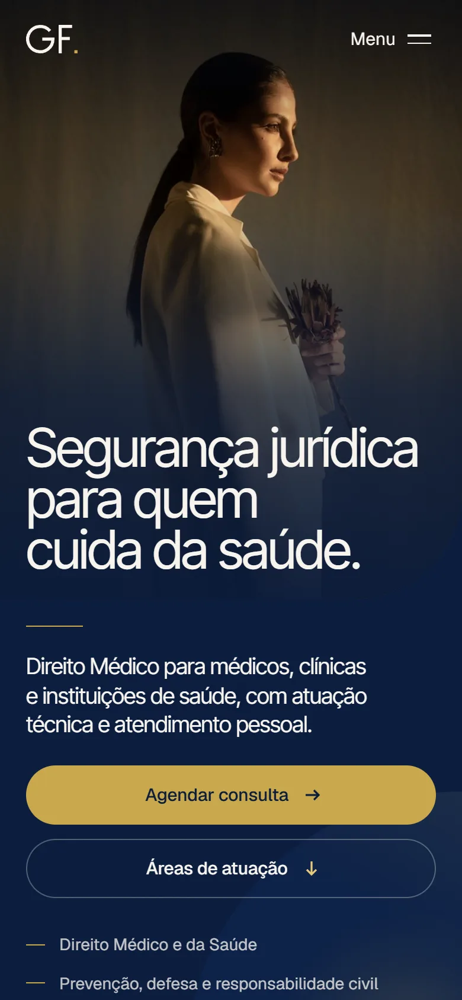
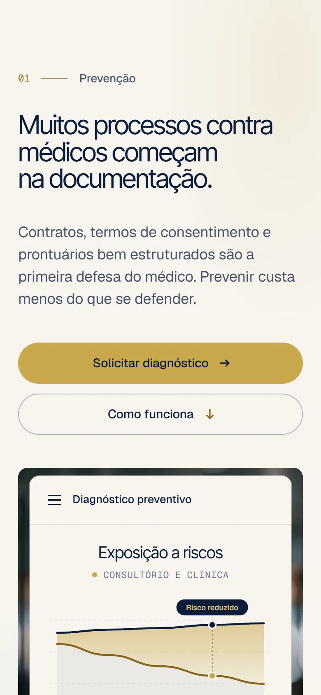
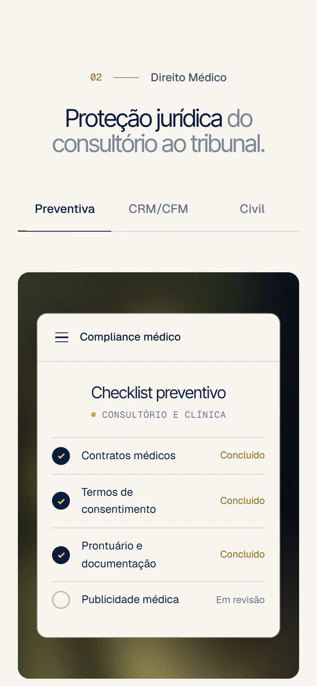
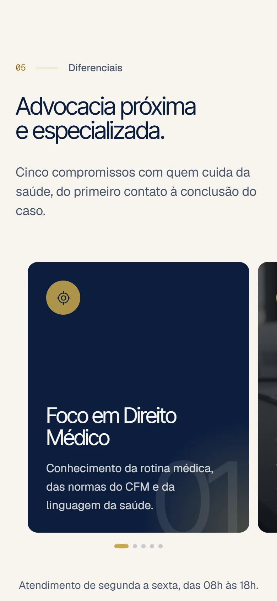

Direito Médico em primeiro plano, sem esconder o resto.
O escritório atende principalmente médicos e instituições de saúde, mas também trabalha com cível, família, tributário e trabalhista. O site precisava deixar claro, logo no primeiro olhar, que a especialidade é Direito Médico, e ainda assim mostrar as outras áreas.
A resposta foi uma página longa e calma, com a sobriedade de um escritório, que leva o médico do problema (riscos na documentação, notificações do CRM, processos) até o contato. As outras áreas aparecem no fim, como atuação complementar.
Sóbria como um escritório, quente como uma clínica.
O logotipo é um monograma GF geométrico: as duas letras desenhadas com o mesmo traço, como uma assinatura, e um ponto dourado que fecha a marca. A paleta alterna azul-marinho e papel, com o dourado aparecendo pouco. Inter Tight nos títulos, Geist nos textos e Geist Mono nos rótulos.
Segurança jurídica para quem cuida da saúde.
Estrutura jurídica do consultório e da clínica pensada para reduzir riscos antes que eles se tornem processos.
01 // DIREITO MÉDICO
Do risco ao contato, em uma única página.
Logo depois da hero, o site fala de risco: um painel de diagnóstico mostra como a exposição cai com acompanhamento. Em seguida vêm as três frentes de Direito Médico em abas, cada uma com um mockup de documento, a metodologia em quatro etapas e cinco diferenciais em cards que se abrem um de cada vez. Azul-marinho e papel se alternam para cada assunto ganhar o próprio respiro.






Feito para o intervalo entre um atendimento e outro.
No celular, título, chamada e botão aparecem sem rolar. As seções de cards viram carrosséis de deslizar, um card por vez, e cada situação leva direto ao formulário com o assunto já escolhido.




Do primeiro rascunho ao site no ar.
- 01Posicionamento e estrutura
Sete seções em sequência, da prevenção ao contato.
- 02Logotipo
Monograma GF com versões para fundo claro, escuro e ícone.
- 03Direção de arte
Azul-marinho, papel e dourado, fotografia em tons quentes e grão.
- 04Textos
Copy escrita para médicos, com situações reais do consultório.
- 05Interface
Mockups de documentos, abas por área e cards ligados ao formulário.
- 06Versão mobile
Hero que cabe na tela e carrosséis de deslizar.
- 07Formulário de contato
Pedido de consulta com área de interesse, direto no e-mail.
- 08Publicação
Imagens otimizadas, metatags e site publicado na Vercel.

Sua marca pode ser a próxima.
Conte o que você precisa: site, reels, social media ou tudo junto. A gente responde pessoalmente.